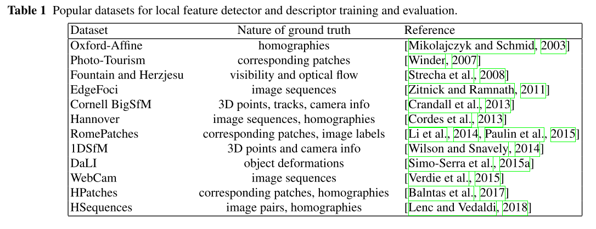

论文笔记6 ：《From handcrafted to deep local features》——特征点提取和描述的综述性文章
1. 基本信息
Csurka, G., Dance, C. R., & Humenberger, M. (2018). From handcrafted to deep local features, 1–41. Retrieved from http://arxiv.org/abs/1807.10254
A local feature consists of a keypoint detector and its descriptor.
The precise location of local features is important for 3D reconstruction. Ideally, if there is no error in local feature, 3D reconstruction is pretty simple and poses of all photos can be calculated without error.
在所有与几何相关的计算机视觉领域，包括但不限于SFM、VSLAM、Motion Tracking、image stitching、3D reconstruction，特征点提取和描述都是首先要解决的基本问题
在更加广泛的Local feature定义中，根据其设计来解决问题的不同，Local feature分类三大类：
- 具有特定的语义信息的点，如道路提取、或者纯净图像中的噪点等等
- 具有几何和光照不变性的点（Ideally, such local features (detector) should be robust to variations in viewpoint (geometric deformations) and lighting (photometric changes，and the descriptors should be distinctive)）
- 为了图像的Robust description，从而可以在统计意义上来描述图像中的object和scenes
One figure that describe the whole process and how descriptor can be invariant to projective transformation( Compute the descriptor on normalized patches).
Nevertheless, most local features are only rotation and scale invariant(也就是没有更加复杂的单应变换的不变性，比如放射变换中的斜切或者其他情况)
it is often possible to pair the detector from one local feature with the descriptor from another.（Detector 和 Descriptor 的杂交）
Hand crafted detector may be based on corners, intensity derivatives, segmentation, mathematical morphology. SIFT and SURF are intensity-derivative-based methods, MSER(maximally stable extremal regions) are segmentation-based. FAST is mathematical-morphology-based method (compare the intensities on the circle and the center one) and used as detector for ORB method.
Benchmark for local feature
different type of learned detector:
- learn to speed up detection while finding the same keypoint of handcrafted methods
- learn the matchability of handcrafted keypoint
- learn to improve detector repeatability by train the network to have a bias for different task using a collection of standard keypoint (比如对于城市环境图像，学习方法能够提取出来更多的规则人造物的角点)
- TILDE(2015)：能够对剧烈的光照变化保证较好的特征点重复性，使用LeNet对序列图像进行训练，评价相邻帧间相近位置点是同名点的可能性，然后生成一张图，每个点的数值标识该点是特征点的可能性。
测试集：wide multiple baseline stereo (WXBS) dataset:每个相对人工选择大概20对同名点作为GroundTruth，甚至包含了可见光-多光谱-红外等多种不同成像传感器的图像。同时通过该测试集的对比发现，大多数的Descriptor的性能随着Photometric Normalization都能得到提升。
评价标准：(详细解释参见：https://blog.csdn.net/honyniu/article/details/87923219)
- repeatability: Lenc and Vedaldi [2018] 对detector的repeatability计算做了改进，修正了一个错误，同时，保证在探测不同数量的特征点的条件下repeatability的稳定性
- mAP(mean average precisions)
- matching score
- 评价的三种典型应用场景：(详细解释参见：https://blog.csdn.net/honyniu/article/details/87923219)
- patch verification task: 具体是指给定一对patch，判断是否匹配
- image matching task:测试描述符能否在两张图像对应。一对图像是经过各种变换的，判断一张图像的patch是否对应另一张图像的patch。置信度分数。
- patch retrieval task:找到近似patch。